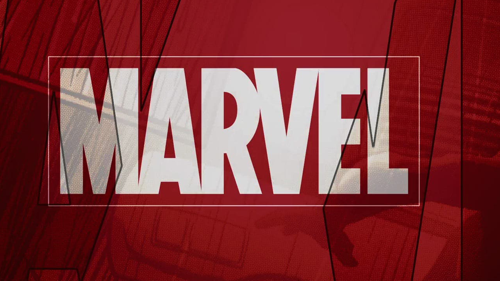
O Universo Marvel Cinematográfico (MCU, ou Marvel Cinematic Universe ) é uma franquia de filmes e séries interconectadas baseada nos personagens dos quadrinhos da Marvel. Iniciado em 2008 com Homem de Ferro , o MCU foi idealizado para criar uma narrativa contínua e expansiva, onde os personagens e eventos se entrelaçam ao longo de várias fases. Ao longo de mais de uma década, o MCU se tornou uma das franquias de maior sucesso, oferecendo uma mistura de ação, drama e humor, sempre com base nas histórias originais da Marvel.
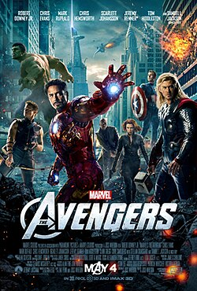
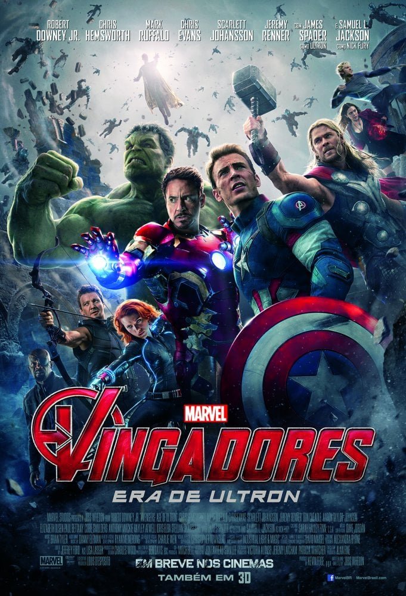
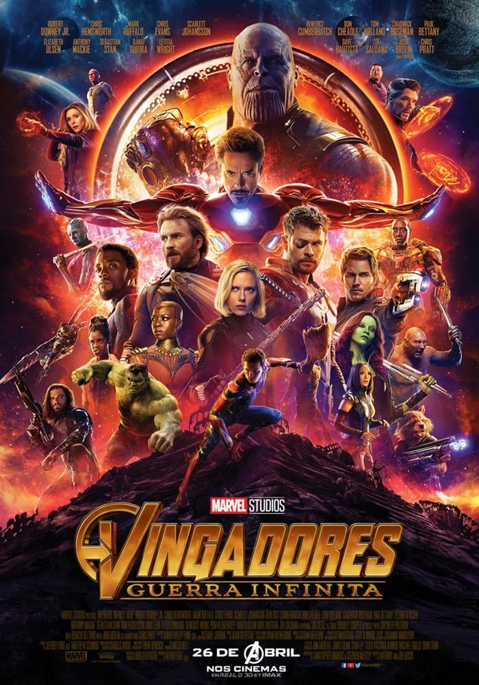
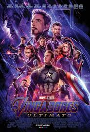
A saga dos Vingadores começa com a formação da equipe, liderada por Nick Fury, para enfrentar Loki, que busca conquistar a Terra com a ajuda de alienígenas. Após derrotarem Loki, os heróis enfrentam um novo desafio quando Tony Stark cria Ultron, uma inteligência artificial destinada a proteger o planeta, mas que acaba se voltando contra a humanidade. Após uma batalha intensa contra Ultron e suas criações, os Vingadores acreditam que o pior já passou.
No entanto, a paz é ameaçada novamente com a chegada de Thanos, um poderoso titã que busca coletar as Joias do Infinito para eliminar metade da vida no universo. Os Vingadores se unem a novos aliados na luta contra Thanos, que culmina em uma batalha épica onde muitos heróis enfrentam perdas significativas. Na luta final, eles elaboram um audacioso plano de viagem no tempo para coletar as Joias do Infinito em diferentes momentos da história, na esperança de reverter os danos causados pelo estalo de Thanos. O clímax da saga é marcado por sacrifícios e redenção, enquanto os Vingadores lutam bravamente para restaurar a esperança e proteger a humanidade.
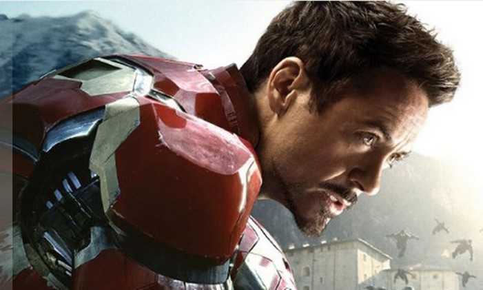
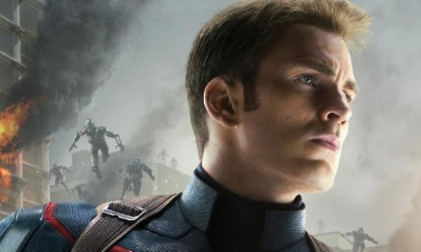
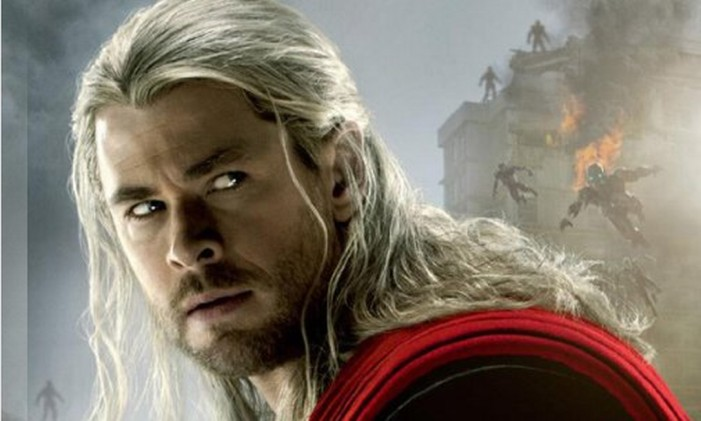
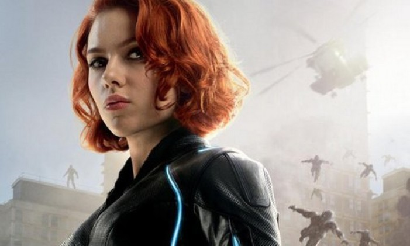
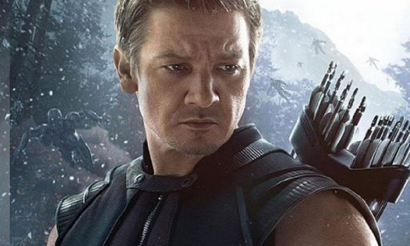
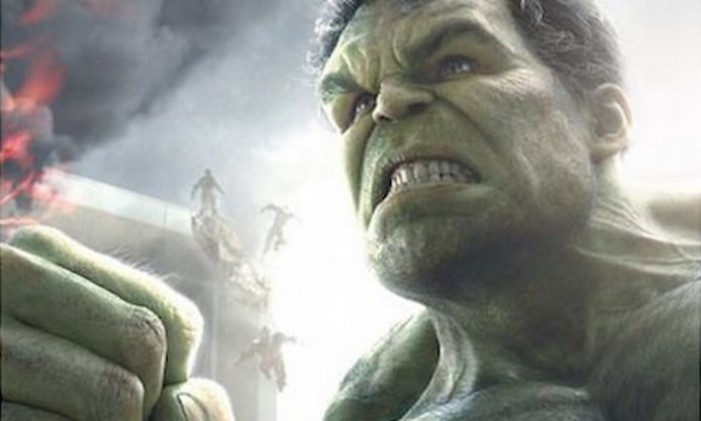
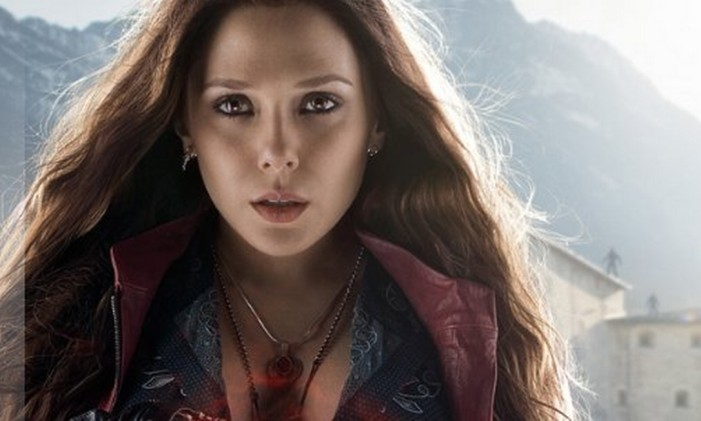
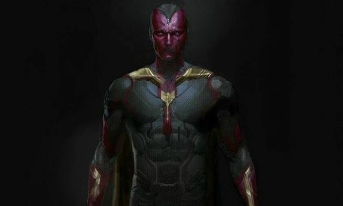
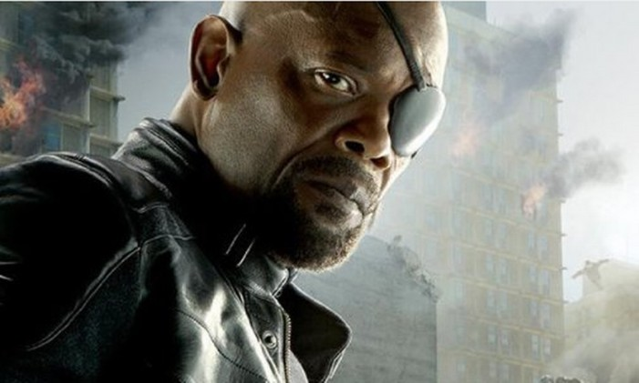